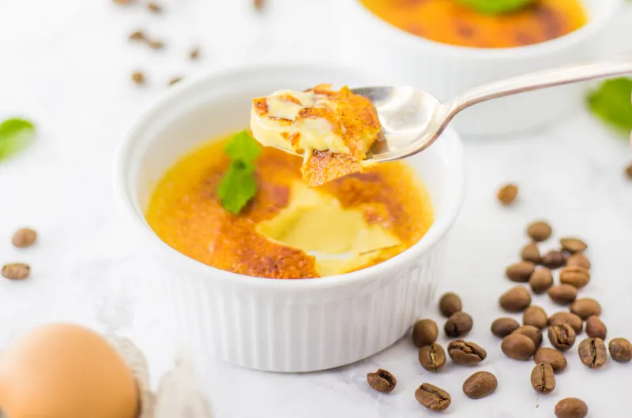

Vietnamese Coffee Crème Brûlée

A luxurious twist on the classic dessert, this Vietnamese Coffee Crème
Brûlée combines rich custard with the bold flavor of dark espresso.
The creamy mixture, made with egg yolks, condensed milk, and heavy cream,
is baked and topped with a caramelized sugar crust, creating a perfect
balance of smooth, coffee-infused sweetness and a crispy finish.
Ingredients
- 6 egg yolks
- 1/3 cup condensed milk
- 2 cups heavy cream
- 1/3 cup dark espresso
- pinch of salt
- extra sugar for brûlée layer
Steps
- Make espresso by using a phin filter or espresso machine,
let it sit aside, you only need 1/3 cup of this
- Combine condensed milk with heavy cream in a pot, bring to a boil then
take it off the heat
- Separate egg yolks and whisk the yolks together
- Slowly add in the heavy cream mixture into the egg yolks
while whisking at the same time, make sure you are adding
the mixture slowly because the heavy cream mixture is hot and
can cook the eggs and we don’t want that
- Once the eggs and heavy cream are both combined add espresso to the mixture
- Place the crème brûlée mixture into separate ramekins
- Bake in the oven at 350 for 40-50 minutes
- Refrigerate for 1 hour then sprinkle sugar on top then torch
Home